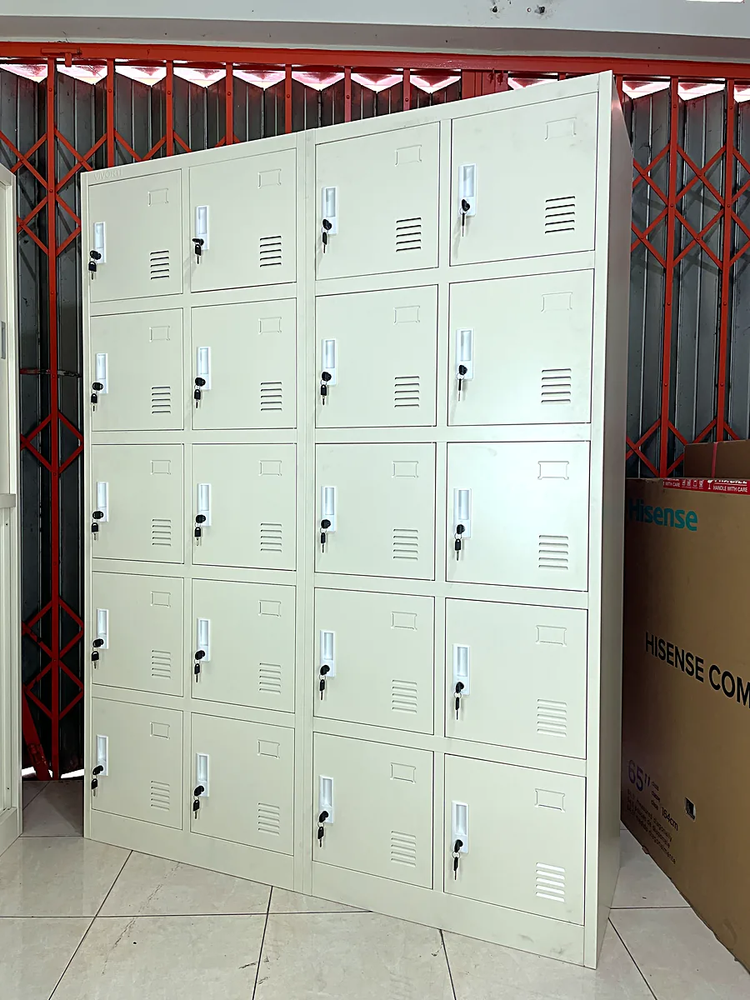
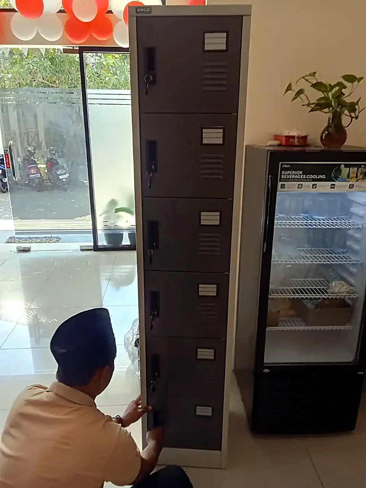
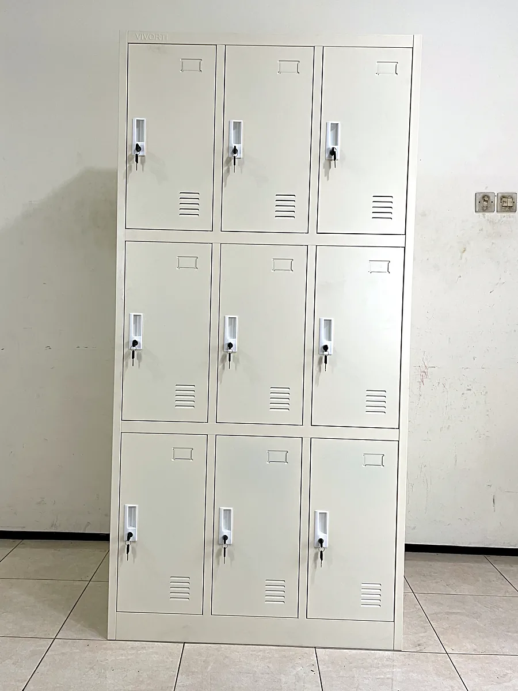
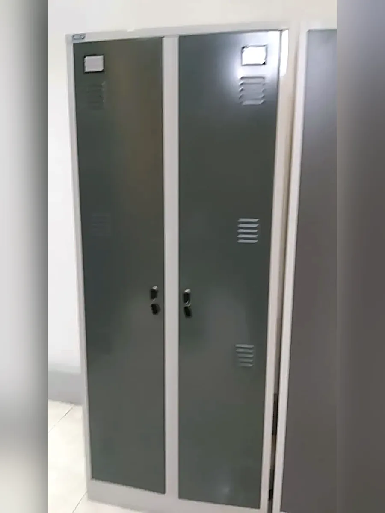
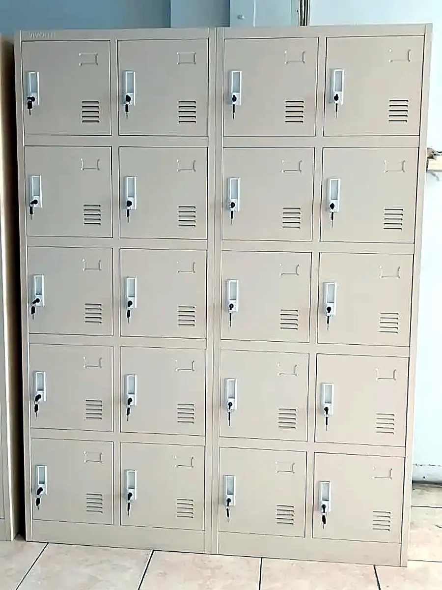
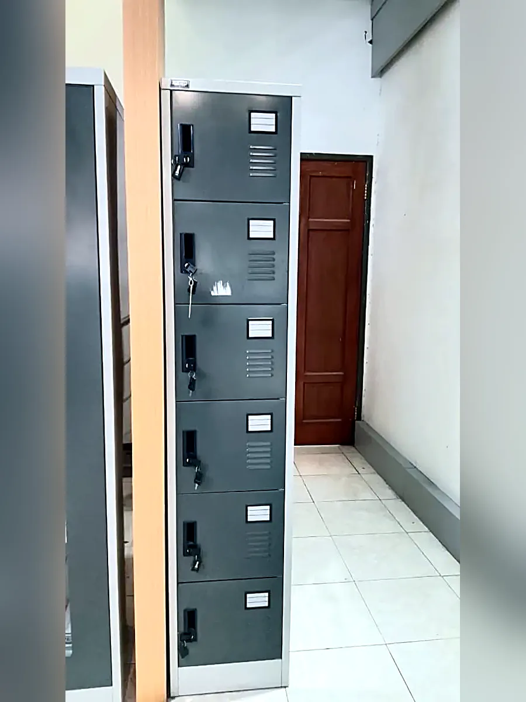
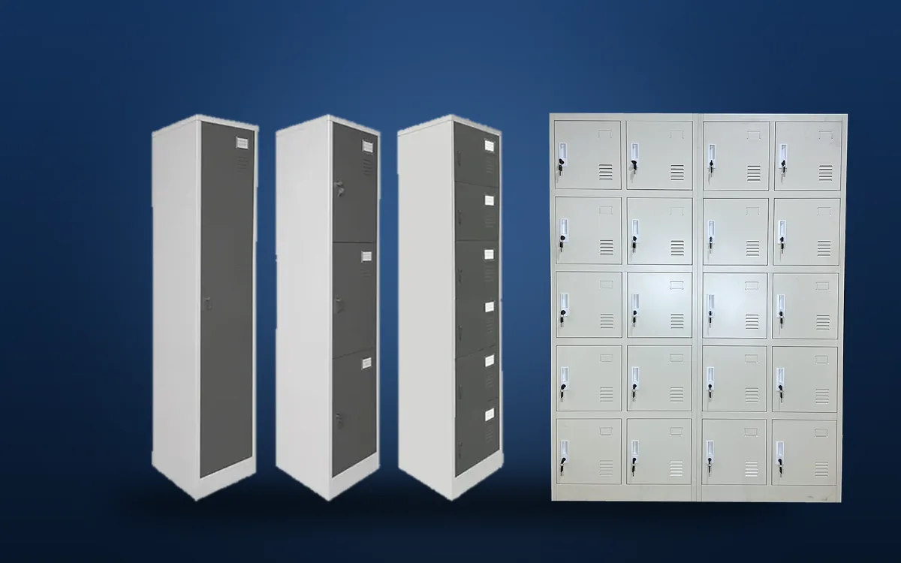
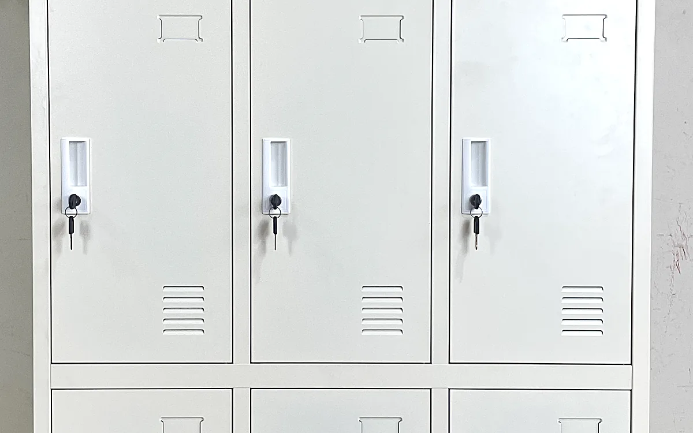
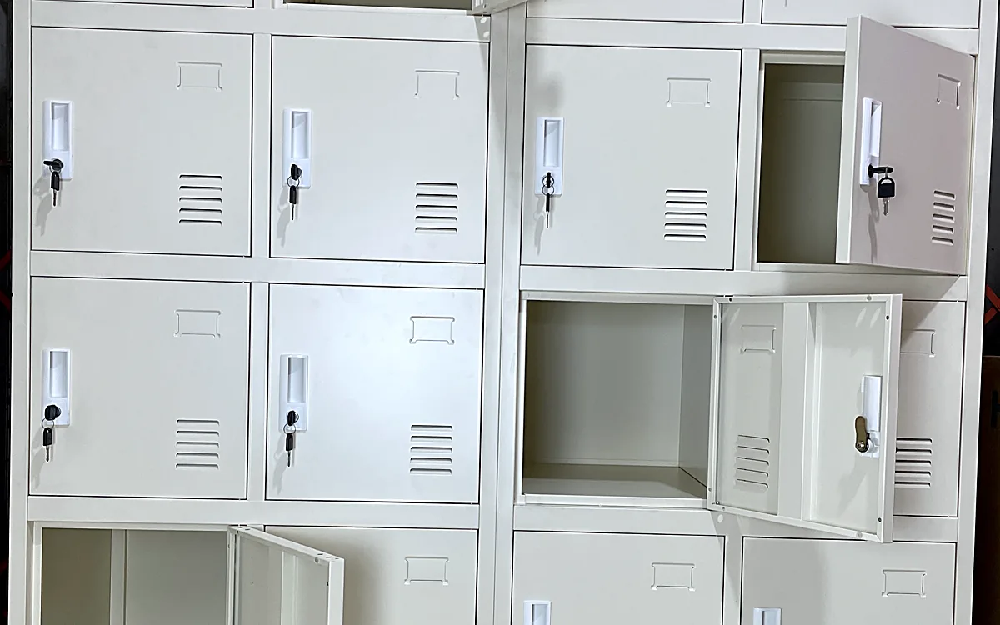

Jual Loker Besi Jakarta untuk Sekolah, Kantor, dan Fasilitas Umum
Loker besi Zeco dan Vivorti dari Cahaya Mustika Internesia. Solusi penyimpanan yang aman dan rapi untuk sekolah, kantor, gym, pabrik, dan fasilitas kesehatan sesuai kebutuhan ruang Anda.


20 Model Resmi
Loker besi Zeco dan Vivorti sesuai katalog resmi masing-masing merek.
1 hingga 20 Pintu
Dari loker personal sampai loker karyawan dalam jumlah banyak.
Melayani Seluruh Indonesia
Kantor di Jakarta Pusat, siap mengirim loker ke seluruh daerah di Indonesia.
Konsultasi via WhatsApp
Dibantu menghitung jumlah pintu dan memilih model yang paling sesuai.
Tantangan
Tantangan Penyimpanan di Ruang Anda
Setiap sekolah, kantor, gym, dan pabrik punya masalah penyimpanan yang berbeda. Loker Zeco dan Vivorti dirancang untuk menjawab tantangan yang paling sering muncul di lapangan.
Diskusikan Kebutuhan Anda ↗- 01Barang berserakan
Tas, jaket, dan perlengkapan menumpuk di meja atau lantai sehingga ruangan terlihat berantakan.
- 02Keamanan tidak terjamin
Barang pribadi dibiarkan terbuka tanpa tempat simpan yang terkunci.
- 03Ruang terbatas
Tanpa penataan yang tepat, area ganti, koridor, dan ruang kerja cepat terasa sempit.
- 04Barang sering tertukar
Setiap pengguna butuh tempat simpan sendiri yang jelas dan berkunci agar barang tidak tertukar atau hilang.
Portofolio
Produk Loker Besi yang Telah Digunakan Pelanggan
Berbagai pilihan loker besi Zeco dan Vivorti untuk mendukung kebutuhan penyimpanan barang pribadi, perlengkapan kerja, dan seragam. Lihat dokumentasi produk untuk kebutuhan kantor, sekolah, pabrik, dan berbagai fasilitas lainnya.

Loker Besi · 20 PintuLoker 4 kolom warna putih

Loker Besi · 6 PintuPemasangan loker 1 kolom

Loker Besi · 9 PintuLoker 3 kolom warna krem

Loker Besi · 2 PintuLoker pintu tinggi untuk seragam

Loker Besi · 20 PintuLoker 4 kolom warna krem

Loker Besi · 6 PintuLoker 1 kolom warna abu-abu
Produk Kami
Pilihan Loker Besi Zeco dan Vivorti untuk Sekolah, Kampus dan Pabrik
Temukan pilihan lemari loker besi dari Zeco dan Vivorti dengan berbagai konfigurasi pintu. Tersedia model untuk penyimpanan personal, perlengkapan kerja, seragam, dan barang karyawan.


Informasi dan Panduan
Artikel dan Panduan Seputar Loker Besi

Loker Besi vs Smart Locker: Mana yang Cocok untuk Anda?
Memilih antara loker besi konvensional dan smart locker digital bergantung pada pola pemakaian, anggaran, dan tingkat kontrol akses.
Baca Selengkapnya →
Cara Menentukan Jumlah Pintu Loker yang Dibutuhkan
Hitung kebutuhan pintu dengan membedakan pengguna tetap, pengguna bergantian, dan puncak kunjungan.
Baca Selengkapnya →
5 Tips Merawat Loker Agar Awet dan Tetap Rapi
Perawatan rutin yang sederhana membantu loker tetap berfungsi baik dan terlihat rapi dalam jangka panjang.
Baca Selengkapnya →
Mengenal Parcel Locker untuk Apartemen dan Kantor
Parcel locker memungkinkan paket dititipkan dan diambil secara mandiri tanpa menunggu petugas.
Baca Selengkapnya →FAQ
Pertanyaan Seputar Jual Loker Besi Jakarta
Apa bedanya Zeco dan Vivorti?
Zeco menonjolkan loker besi yang kokoh untuk pemakaian intensif. Vivorti menyediakan loker multi-pintu VT-LC09 (9 pintu) dan VT-LC20 (20 pintu) untuk kebutuhan banyak pengguna.
Bisakah jumlah pintu disesuaikan?
Bisa. Unit bersifat modular sehingga dapat disusun berderet dan dikombinasikan. Tim kami membantu menentukan konfigurasi yang sesuai.
Bagaimana cara meminta penawaran?
Klik tombol Konsultasi Sekarang di halaman produk atau hubungi WhatsApp +62 811-3301-819. Sebutkan model, jumlah unit, dan lokasi pengiriman.
Apakah tersedia untuk pengiriman ke luar kota?
Bisa. Kami melayani pengiriman ke seluruh daerah di Indonesia. Hubungi tim kami untuk estimasi biaya dan waktu pengiriman ke lokasi Anda.
Apakah loker bisa dipasang di lokasi kami?
Bisa. Loker dapat dipasang di sekolah, kantor, gym, pabrik, fasilitas kesehatan, hingga apartemen dan retail. Tim kami membantu menyesuaikan jenis dan jumlah unit dengan ruang Anda.
Apa beda varian T5, T6, dan T7 pada loker Zeco?
Ketiganya berukuran sama, 38 × 38 × 183 cm. Bedanya ada pada ketebalan plat bodi: T5 0,5 mm, T6 0,6 mm, dan T7 0,7 mm. Semakin tebal plat, semakin kokoh untuk pemakaian intensif.
Berapa lama estimasi pengiriman dan pemasangan?
Estimasi bergantung pada ketersediaan unit, jumlah pesanan, dan lokasi. Hubungi tim sales melalui WhatsApp untuk jadwal yang sesuai dengan proyek Anda.